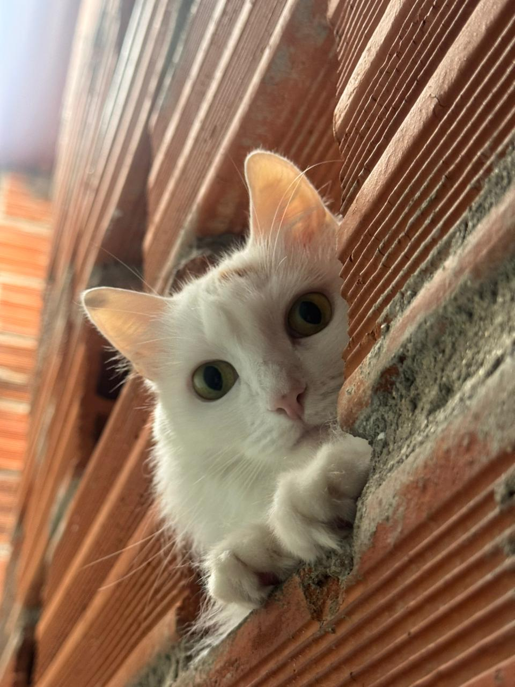

Es un gusto volver a estar en contacto contigo, Detective Monita.
Lamentablemente, no traemos muy buenas noticias sobre Ciudad Monito; últimamente han surgido una nueva serie de crímenes sin resolver, te los dejo a continuación:
Se reporta la desaparición de Alias Copito mientras adelantaba una misión de espionaje en las instalaciones de Monito Malvado. Su última comunicación fue el 10/10/2026 a las 21:13.
Actualmente nos encontrábamos investigando debido a actividad sospechosa de Monito Malvado; fue hallado comprando croquetas del exterior con fines de introducirlas al mercado negro de Ciudad Monito.

“ … He logrado ingresar a la guarida de Monito Malvado … Habían demasiados guardias en la entrada … Logré escabullirme por un ducto de ventilación, miau”
“ … Encontré el sitio donde almacenan las croquetas para gato … tienen un olor bastante apetitoso, miau … no hay guardias a la vista, creo que no hay problema si tomo algunas …”
“ … salí corriendo y terminé en un callejón sin salida, me encuentro rodeada por más de 50 guardias … las croquetas son altamente adictivas, miau … no creo poder salir a salvo de esta misión …”
“ … ¡muajaja! caíste en mi trampa …”
En las próximas horas recibirás las instrucciones cifradas para tu primera misión, prepárate para vivir el reto más difícil de toda tu carrera.
Hasta pronto, Detective Monita.